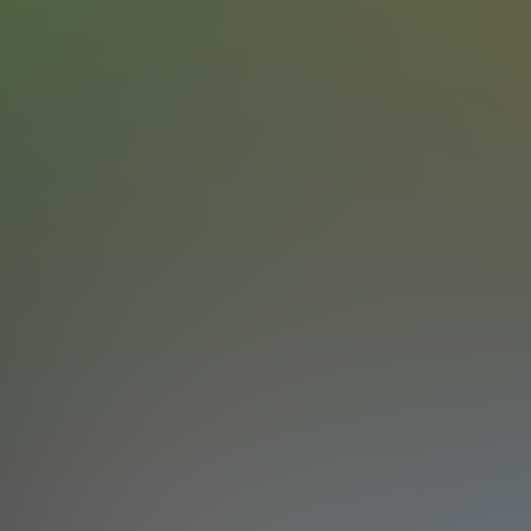

带你进阶的100多本书籍>>>
Csharp
C#(读做 "C sharp") C#是一种安全的、稳定的、简单的、优雅的，由C和C++衍生出来的面向对象的编程语言。C#综合了VB简单的可视化操作和C++的高运行效率，以其强大的操作能力、优雅的语法风格、创新的语言特性和便捷的面向组件编程的支持成为.NET开发的首选语言。
HTML
超文本标记语言， 标准通用标记语言下的一个应用。" 超文本 "就是指页面内可以包含图片、链接，甚至音乐、 程序等非文字元素。超文本标记语言的结构包括 "头"部分（英语：Head）、和"主体"部分，其中"头"部提供关于网页的信息，"主体"部分提供网页的具体内容。
ios
ios（原名：iPhone OS）是由苹果公司为移动设备所开发的操作系统，支持的设备包括iPhone、iPod touch、iPad、Apple TV。与Android及Windows Phone不同，iOS不支持非苹果的硬件设备。系统操作（iOS 7）占用约700-900MB左右的存储空间.

Android
Android是一种基于Linux的自由及开放源代码的操作系统，主要使用于移动设备，如智能手机和平板电脑，由Google公司和开放手机联盟领导及开发。
Java
Java是一种可以撰写跨平台应用程序的面向对象的程序设计语言。Java 技术具有卓越的通用性、高效性、平台移植性和安全性，广泛应用于PC、数据中心、游戏控制台、科学超级计算机、移动电话和互联网，同时拥有全球最大的开发者专业社群。
Linux
Linux是一套免费使用和自由传播的类Unix操作系统，是一个基于POSIX和UNIX的多用户、多任务、支持多线程和多CPU的操作系统。它能运行主要的UNIX工具软件、应用程序和网络协议。它支持32位和64位硬件。Linux继承了Unix以网络为核心的设计思想，是一个性能稳定的多用户网络操作系统。
Python
Python是一种面向对象、直译式计算机程序设计语言。也是一种功能强大而完善的通用型语言，已经具有十多年的发展历史，成熟且稳定。Python 具有脚本语言中最丰富和强大的类库，足以支持绝大多数日常应用。 Python语法简捷而清晰，具有丰富和强大的类库。
Ruby
Ruby，一种为简单快捷面向对象编程而创的脚本语言，在20世纪90年代由日本人松本行弘开发，遵守GPL协议和Ruby License。Ruby是一个语法像Smalltalk一样完全面向对象、脚本执行、又有Perl强大的文字处理功能的编程语言。
Web
目前，该词汇又引申为“环球网”,对于普通的用户来说，web仅仅只是一种环境—互联网的使用环境、氛围、内容等；而对于网站制作、设计者来说，它是一系列技术的复合总称(包括网站的前台布局、后台程序、美工、数据库领域等等的技术概括性的总称)。
Windows
也称Microsoft Windows,是美国 微软公司研发的一套操作系统，它问世于1985年，起初仅仅是 Microsoft- DOS模拟环境，后续的系统版本由于微软不断的更新升级，不但易用，也慢慢的成为家家户户人们最喜爱的操作。
互联网
互联网是由一些使用公用语言互相通信的计算机连接而成的网络，即广域网、局域网及单机按照一定的通讯协议组成的国际计算机网络。互联网，始于1969年的美国，又称因特网，是全球性的网络，是一种公用信息的载体，这种大众传媒比以往的任何一种通讯媒体都要快。
软件工程
软件工程 (Software Engineering，简称为SE)是一门研究用工程化方法构建和维护有效的、实用的和高质量的软件的学科。它涉及到程序设计语言，数据库，软件开发工具，系统平台，标准，设计模式等方面。
数据库
数据库(Database)是按照数据结构来组织、 存储和管理数据的仓库。数据库有很多种 类型，从最简单的存储有各种数据的 表格到能够进行海量 数据存储的大型 数据库系统都在各个方面得到了广泛的应用。
信息安全
信息安全，简称信安，意为保护信息及信息系统免受未经授权的进入、使用、披露、破坏、修改、检视、记录及销毁，是一门涉及计算机科学、网络技术、通信技术、密码技术、信息安全技术、应用数学、数论、信息论等多种学科的综合性学科。